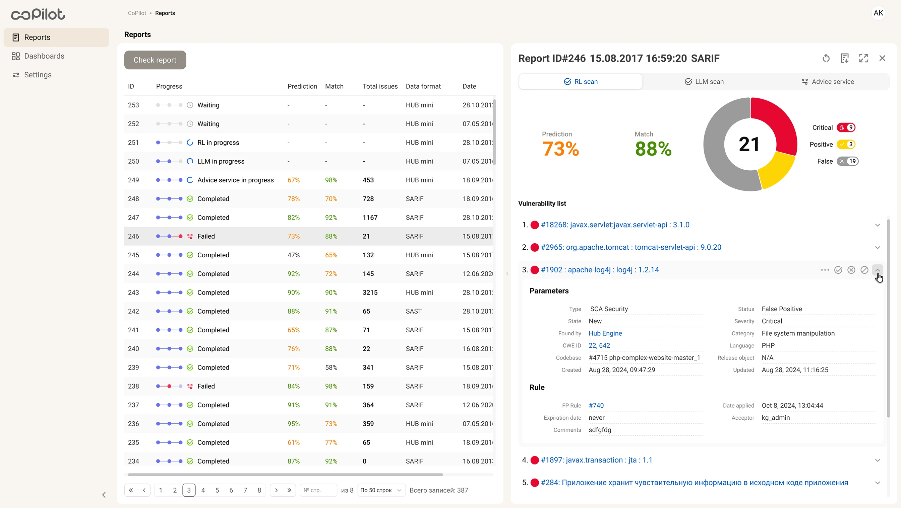
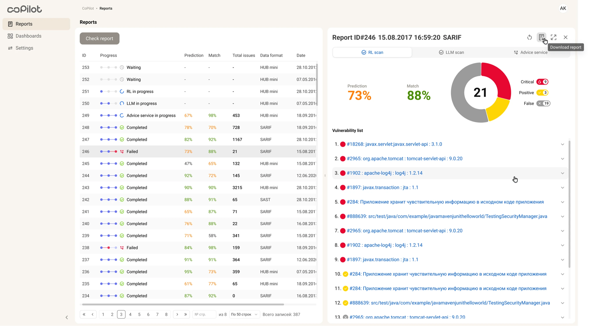

CoPilot: отчёты по безопасностиCoPilot: security reports
Split-screen workspace, в котором AppSec-аналитик разбирает отчёты и принимает решения, не теряя контекст.A split-screen workspace where AppSec analysts review reports and make decisions without losing context.
Context
AppSec-команды разбирали отчёты, уязвимости, CWE, source evidence, рекомендации сервисов и историю решений — но всё это лежало в разных местах. При сотнях находок аналитик тратил время не на само решение, а на сбор контекста по кусочкам, а каждое переключение между инструментами повышало риск пропустить важное или закрыть находку наугад.AppSec teams reviewed reports, vulnerabilities, CWE, source evidence, service recommendations and decision history — but all of it lived in different places. With hundreds of findings, analysts spent time not on the decision itself but on piecing context together, and every switch between tools raised the risk of missing something or closing a finding at random.
Design challenge
Нужно было не добавить ещё один экран с данными, а выстроить порядок принятия решения: что видно сразу, где проверяется рекомендация и какое действие безопасно выбрать.The goal was not to add yet another data screen, but to build an order for decision-making: what is visible right away, where a recommendation is verified and which action is safe to take.

Моя рольMy role
Вела дизайн полного цикла: интервью и наблюдение review-сессий, информационная архитектура, split-screen workspace, сценарии принятия решений и компоненты для security UI. Работала с PM, аналитиками безопасности, DevSecOps и разработкой.I led the full design cycle: interviews and observation of review sessions, information architecture, the split-screen workspace, decision-making scenarios and components for the security UI. I worked with PM, security analysts, DevSecOps and engineering.
ЗадачиGoals
- Разобрать review-цикл AppSec-аналитиков и точки потери контекстаBreak down the AppSec analysts' review cycle and the points where context is lost
- Спроектировать ИА: что видно сразу, а что открывается по запросуDesign the IA: what is visible right away and what opens on demand
- Собрать split-screen workspace со списком отчётов, деталями и действиямиBuild a split-screen workspace with the report list, details and actions
- Показать evidence для доверия к рекомендациям: source, code, rule, CWE и параметрыShow evidence to build trust in recommendations: source, code, rule, CWE and parameters
РешениеSolution
Split-screen workspace вместо переходов между страницами:A split-screen workspace instead of page-to-page navigation: заменила сценарий список → страница → назад на две панели: отчёты остаются слева, а детали и действия открываются справа. Этот паттерн выбрала после сравнения full-page, drawer и split-screen вариантов.I replaced the list → page → back flow with two panels: reports stay on the left while details and actions open on the right. I chose this pattern after comparing full-page, drawer and split-screen options.

Левая панель / обзор отчётов:Left panel / reports overview: каждая строка показывает прогресс, прогноз, совпадение, число проблем, формат и дату. Аналитик переключается между отчётами, не теряя общий список.each row shows progress, prediction, match, issue count, format and date. The analyst switches between reports without losing the overall list.

Правая панель / детальный анализ отчёта:Right panel / detailed report analysis: детали собирают рекомендации сервисов, severity, список уязвимостей, параметры, rule и triage-действия. После тестирования я сократила вкладки, закрепила severity/status и добавила якоря к находкам.the details bring together service recommendations, severity, the vulnerability list, parameters, rule and triage actions. After testing, I reduced the tabs, pinned severity/status and added anchors to the findings.

РезультатOutcome
- 120+ часов в месяц120+ hours a month команда перестала терять на сбор контекста между инструментами.the team no longer loses on piecing context together between tools.
- Review перестал распадаться на переходы:Review stopped breaking into jumps: отчёт, детали уязвимости, evidence и действия живут в одном экране, поэтому аналитик держит решение в одном контексте.the report, vulnerability details, evidence and actions live on one screen, so the analyst keeps the decision in one context.
- Решение перестало быть слепым:Decisions stopped being blind: severity, CWE, source evidence, rule и параметры стоят рядом с рекомендацией — её можно проверить, а не принять на веру.severity, CWE, source evidence, rule and parameters sit next to the recommendation — it can be checked, not taken on faith.